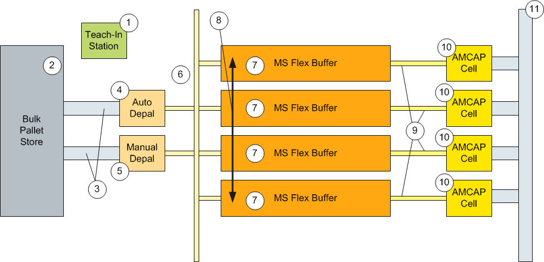
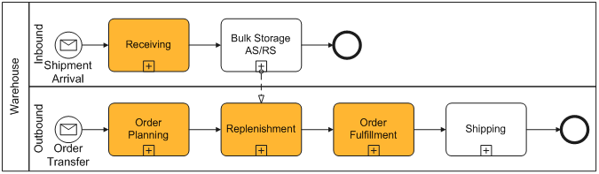

|
|
|
|


|

|
|
AMCAP stands for Automatic Mixed Case Palletizing and is completely provided by DCD. AMCAP is intended to be a sub-system that seamlessly integrates with a customer's overall warehouse operations and covers high performance order assembly, especially for production of heterogeneous pallets and roll cages.
The AMCAP system is usually not a standalone and exclusive system within a customer's environment. In most cases it will be integrated with other warehousing activities focusing on the handling of products with specific characteristics. Therefore, AMCAP-related business processes need to be integrated with other processes which may either be controlled by a Dematic system or by a non-Dematic system.
|
|
|
|
An AMCAP system use various components of DCD. The next figure gives an overview over these elements.
Figure 1: AMCAP Overview

The Teach-In Station is used to collect all required information on products which are handled in the AMCAP subsystem. This affects the basic decision whether or not a product or item can be handled by AMCAP at all, as well as all handling operations, including de-palletizing, conveying, storage and palletizing.
The bulk store serves as a volume buffer for products to be replenished into the AMCAP subsystem. This is typically an AS/RS system where products are stored on single-SKU pallets.
The bulk store is not considered an integral part of the AMCAP subsystem.
The inbound pallet conveyor is used to take pallets from the bulk pallet store to the de-palletizing stations. Depending on the type of de-palletizing, suitable workstations must be addressed.
In addition, it is also responsible for removal of empty pallets as well as put-away of partly de-palletized pallets.
The automatic device
Automatic de-palletizing typically requires that the product as well as the specific pallet are suitable for automatic de-palletizing. In addition, also the quantity to be de-palletized must be suitable for automatic processing.
The manual de-palletizing station is used for all situations where de-palletizing cannot be handled automatically. Manual workstations may also serve a backup for automatic ones of for a coverage of peak loads. Depending on details of the layout, manual and automatic de-palletizing may be mutually exclusive. Despite from automated and manual operations, the de-palletizing result from both workstations is the same.
This device receives de-palletized packaging units from the de-palletizer and creates a flow of single items having a definite orientation. This device is responsible for the correct distribution of product items with a de-fined orientation to the different MS buffers according to target specifications provided by the Warehouse Control System (WCS). For this purpose, the Distributor needs to be equipped with product identification and product orientation devices. Conveying of items is tray-less. Inbound throughput must not be less than the outbound throughput in order to assure continuous operation of the entire sys-tem. According to the current design, the Distributor device is built with straight con-veyors connecting every de-palletizer with two Multishuttle aisles where a pusher is used for transversal movements. To achieve the required throughput, items are not handles as singles but as groups of items of the same type (slugs).
The device needs to assure the following:
For tray-less storage and sequenced retrieval of product items, the Multishuttle Flex Gen II is used.
MS Flex provides capabilities to handle highly dynamic carton and tote with variable sizes of units.
For details on MS Flex see: SlotDetailDialog
For stock adjustments across the individual buffers it is required to support trans-fer of items across different aisles. This is especially the case when de-palletized items are required in aisles which are not directly connected to the de-palletizer. An other application is the case where items need to be relocated after storage to an aisle different from the aisle where they have been initially stored.
Inter-Aisle Transfer use specific bays in an aisle where a shuttle may push items to the next aisle. Using multiple transfers of this kind, items can be brought to any location in any buffer.
This conveyor is used to supply items to the palletizing stations. The conveying system needs to verify that the correct items in the correct se-quence and orientation arrive at the palletizing stations. If necessary, items need to be reoriented before handover to the palletizer. For this purpose, product verification and orientation devices need to be inte-grated.
At these workstations, pallets or roll cages are built from the product items and automatically wrapped.
The typical workstation is an automatic palletizing device (RapidPall cell). In specific installations, it is also possible to use a manual workstation (ERGOPALL) for one or several workstations.
Optionally, the palletizing workstation includes a camera which allows taking a video of the palletizing process for every pallet as well as a picture of the final result.
This conveyor is used for staging empty pallets or roll cages and for removal of completed pallets or roll cages.
|
|
|
|
Some basic design decisions have been made which are essential for the overall operation as well as for the IT system:
|
|
|
|
The following figure shows a high level overview on the inbound an outbound processes within a warehouse or a distribution center. The sub-processes including AMCAP-related activities are highlighted.
Figure 2: Process Overview

AMCAP requires detailed information on the products which are going to be palletized automatically.
For example, product dimensions are required for pallet generation as well as for storage within Multishuttle Flex. Tray-less transport of products requires information on maximum conveying velocity or acceleration allowed. Many more details may be required in order to assure faultless handling of products within the AMCAP system.
Measuring of products is usually to be done during the receiving process before storage in the bulk area. This is because the automatic replenishment requires already specific product information for secure handling.
The first step is the creation of an order, which is normally transferred from an ERP system or from other sources. Depending on the need of the order the products are replenished from the bulk area.
As soon the need of the order is fulfilled pallet planning can be started.
The replenishment process shall support the essential AMCAP principle to do order-related distribution on the inbound side rather than cross-aisle sequencing on the outbound side. Therefore, the replenishment process needs to generate a distribution of stock within the different aisles which allows to continuously build pallets on all active palletizers.
This requires, in general, a pre-allocation of orders (or sub-orders) to specific aisles considering the requirement to balance load across the palletizers.
In typical scenarios, the system will determine the demand for a certain look-ahead period, which may be an entire day, a shift or a shorter period.
Automatic de-palletizing of single-SKU layers produces flows of items of the same kind. Depending on the de-palletizer, specific restrictions can be imposed to the structure of pallets and layers. For example, it can be enforced that layers need to be complete in order to be de-palletized automatically.
Manual de-palletizing workstations can be used as backup for automatic work-stations, in order to cover peak loads and for de-palletizing those pallets which cannot be handled automatically.
Mixed pallets are de-palletized manually, except for "rainbow" pallets, consisting of a sequence of single-SKU layers.
In either case, the result of de-palletizing is a flow of individual items on the in-bound Case Conveyor.
Before storage in the MS Flex various checks are to perform. Depending on project specific restrictions, only a subset of actions may be applied.
The system compares expected data for dimensions, weight and inventory attributes with information obtained from measurement and barcode analysis. Depending on specific rules and algorithms, items are rated as accept-able or faulty and directed to the Multishuttle storage or to a reject lane.
The Order Fulfillment sub-process is started for an individual aisle whenever the number of pallets already planned for that aisle is less than a certain threshold.
After replenishment in the Multishuttle Flex the best candidate for execution is selected first. The selected order is send to packbuilder and is planned. After the planning, product items for each planned pallet are allocated to the order to prevent usage for other order.
Retrieval of units for a pallet is started automatically after the last item of the previous pallet has been retrieved. This sub-process involves also the following actions. Depending on project specific restrictions, only a subset of actions may be applied.
At the end the items are palletized in the AMCAP-cell. This process includes also an optional video capture of the palletizing process.
To avoid concurrency in the fulfillment some restrictions are given:
|
|
|
|
On the following pages the different components of a AMCAP system are described in detail:
|
Component |
Description |
|---|---|
| Before storing the pallets in the AS/RS acquisition of product data is necessary. This data is necessary for each AMCAP related process. | |
| Order allocation | The assignment of an order to an aisle is necessary to start planning and palletizing. During the replenishment into the Multishuttle buffer this assignment is considered to store the inventory in the right aisle. |
| De-Palletizing | This describes the process of creating single items from pallets. Thereby heterogeneous pallets can be de-palletized automatically, but mixed pallets needs to de-palletized manually. |
| Item identification and verification | Before storage each item is to identified and verified. Afterwards depended on the order need the target aisle is selected for the item. |
| Putaway | The putaway strategies defines how the items are stored into the MS Flex. In this chapter the AMCAP specific strategies are described. |
| Stock distribution | Either the items are stored in the aisle where they are needed (during putaway) or non needed items from another aisles are transferred via iAT to the target aisle. |
| Determine candidate | This process selects the best candidate (order) which can be send to packbuilder for pallet planning. |
| Pallet planning | This page describes the pallet planning process. |
| Stock allocation | This page describes the process after pallet planning. |
| Retrieval | The retrieval strategies how the items are requested to the palletizer cell are described here. |
| Palletizing | This page describes the palletizing process. Also the error handling which lead to the manual palletizing is mentioned. |